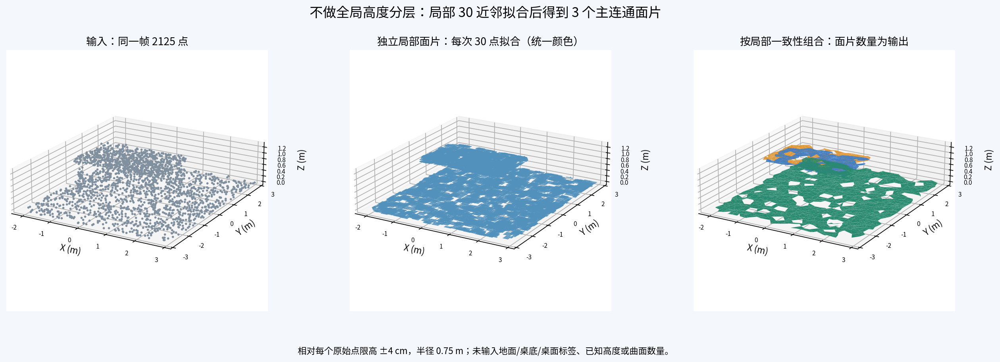

① 原始点云 · 同一帧 2125 点
所有点直接输入算法，默认未按组件着色
每个原始点各拟合一次；相同 XY 的不同高度分别保留。不检测全局高度峰，不指定三个面。
默认原始点为灰色，独立小曲面统一蓝色；右图按自动组件着色，组件开关只作用于右图和剖面。“回看”仅改变显示配色。红点是当前种子选中的近邻。
所有点直接输入算法，默认未按组件着色
各局部二次函数独立采样，面片之间没有连网
顶点取局部拟合高度；兼容邻接面片才连接，缺口保留
红色圆点：选中近邻，包含种子自身；红色十字：这个种子的拟合位置。勾选“中图只显示当前一个局部面片”可逐个看二次曲面。
表中的高度是结果统计，未输入拟合。没有要求恰好三个面；少于 30 个有效种子的孤立组件保留为未分组点。竖直桌腿和桌板侧边不保证能用高度函数拟合。
曲线取组合三角网格的线性离散近似，空白处无三角形支持。灰点取剖面 ±0.10 m 带；同一 X 可保留不同高度的曲线。
局部水平高差约束仍可能在大坡度、高曲率或密度不足处留下未知。当前结果只能说明这一个合成桌子场景的表现，边缘与桌腿接触处仍有混合点。
